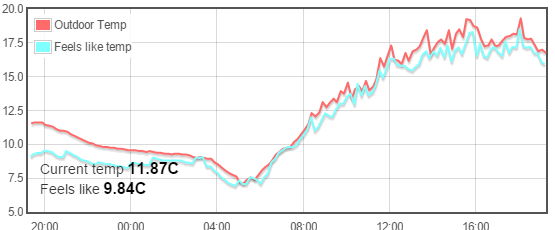
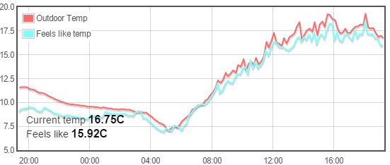

I've been using some simple html code in my dashboards for a couple of years now to display the numerical values of feeds, such as temperature (attached screenshot) as follows;
<div class="feedvalue" feedname="Outdoor-Temp" units="C" decimals="2"></div>
This has always worked well until I switched to the extended branch, when the feedvalues stopped updating in the dashboard, despite refreshing/reloading the browser/clearing the cache.
Tonight, I switched back to 8.5 branch and sure enough, the feed values began updating OK in my dashboards as they always have. When I switched back to the extended branch they again stopped.
What has changed in the extended branch to cause this?

The above (extended branch) shows that 'Current temp' is displaying a historical value (11.87C), whilst the actual feed value is 16.75C.
The below (8.5 branch) shows the correct value, and constantly updates to the current feed value.

Re: 8.5 Extended ver - html code in dashboard
In http://hostname/feed/list is the value updated correctly ?
Re: 8.5 Extended ver - html code in dashboard
SORTED! Silly mistake - the Emoncms database needed updating for the extended branch.
Now it's been updated, the values are back updating.
Paul